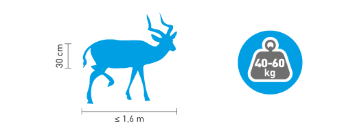
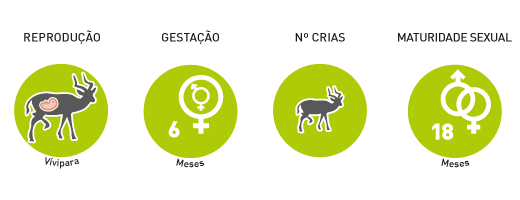
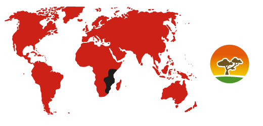

Antylopa Kama
Alcelaphus caama
Rząd:parzystokopytne
Rodzina:krętorogie
Charakterystyka

Nazwa angielska tych antylop pochodzi od holenderskiego słowa ,,hart”, oznaczającego ,,wytrzymałość” i została nadana przez pierwszych europejskich osadników. Występuje kilka podgatunków, izolowanych geograficznie (prowadzą osiadły tryb życia). Posiadają rogi o długości 40cm – występują u osobników obu płci.
Tryb życia

Tworzą stada, liczące od 20 do 300 osobników. Dorosłe samce zaznaczają swoje terytorium odchodami. Młode samce tworzą luźne stada na obszarach często z gorszą jakością pastwiska.
Rozmnażanie

Na jednych terytoriach zwierzęta rozmnażają się tylko podczas pory deszczowej. Na innych obszarach (gdzie łatwiej o wodę), przez cały rok. Młode po narodzinach zostaje w ukryciu, dopóki nie nabierze wystarczającej ilości sił by podążać za stadem.
Zasięg i siedlisko

Sawanna.
Ochrona

Zagrożenia: Ich liczebność spada z powodu polowań (są łatwą zdobyczą a także stanowią konkurencję dla bydła, ponieważ są mniej selektywne w wyborze gatunków traw).
Ciekawostki
- Antylopy Kama są jednymi z najszybszych antylop w Afryce. Biega z prędkością 75km/h.